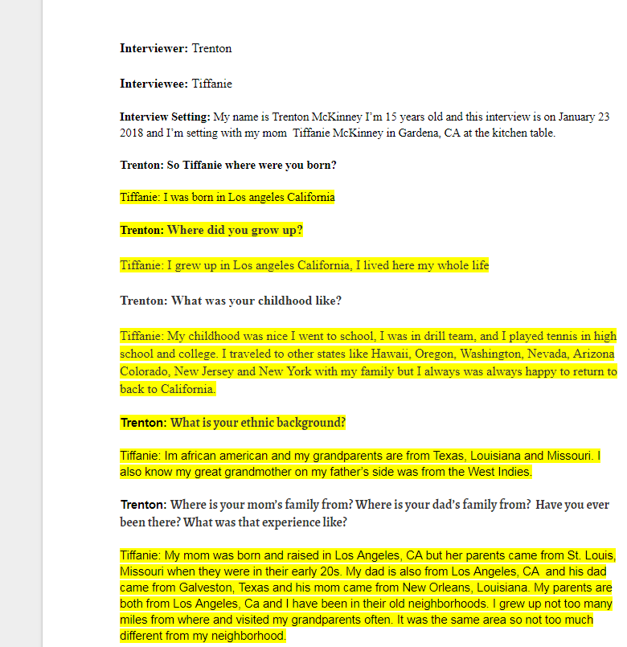
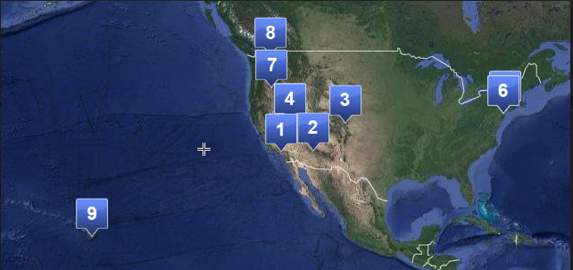

<!DOCTYPE html>
<html>
	<head>
	<link href="stylesheet.css" type/css" rel="stylesheet">
	</head>
</html>
<div class="box1">
<p> In World History we interviewed our family member then we recorded what they said and wrote a transcript about it. Then after I worked on both of the audio and transcript.I had to do a coding map to show the place that my mom said in the interview. 
<br>
<br>
<br>

<a href="https://docs.google.com/document/d/1iLxtj1JD8RAkiOecAfuTma1Jt9VH5rtotiypxUvyQZ4/edit?usp=sharing" target="_blank"></a>
<a href="images/hmap.PNG"> </a>
 <br>
 
<a href="https://drive.google.com/open?id=0B4fh4UJpptDnbkhGRE1NQ0JMQ21Jdkg0SkdWYm45ODFLMGhr">Audio File</a>
</div>

<a href="noel.html">Humanities 10</a>
<br>

<a href="index.html">Home</a>


